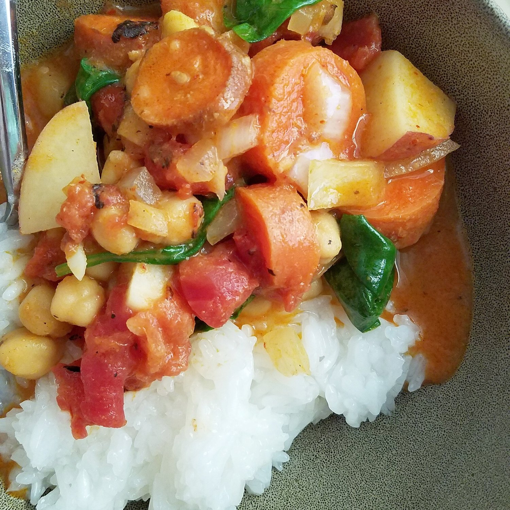

Slow Cooker Thai Red Curry (v, gf)

You know those days when you just canNOT be bothered to think about food, cooking food, finding food, anything essential? Because other things come first? yesyesyesyesys you know what I mean. When you're wanting to just order junk food and go hard on something less-than-healthy. This slow cooker thai red curry will save the day. This recipe just requires tossing everything in a slow cooker and FORGETTING about it until dinner time. It is so simple, gluten free, healthy, and vegan!
This recipe came in so vital during a busy weekend. I can't believe how flavorful it ended up being, by doing nothing?? It seemed even better the day after since the curry thickened more overnight in the fridge. What's your favorite type of curry? When I go to a thai restaurant, I love getting massaman curry or yellow curry, but to be honest all curries are my favorite curry. Any and every. My only reservation with eating at thai restaurants is although they can be easily vegan-izable, a lot will still use a chicken broth instead of a veggie broth...and I have trust issues. So mastering it at home is fantastic. :)
Try out this slow cooker thai red curry and see for yourself how simple and healthy it is!
Slow Cooker Thai Red Curry
Serves: 4
-
1/2 cup dry chickpeas, hydrated (or use 1 can chickpeas, drained)
-
1 can full fat coconut milk
-
1 can fire roasted tomatoes (drain out liquid first)
-
2 medium potatoes, peeled and cubed
-
1/2 onion, diced
-
3 carrots, sliced
-
2 tsp coconut oil
-
1/4 cup thai red curry paste (I used this)
-
2 garlic cloves, minced
-
1/2 tsp fresh ginger
-
dash of salt
-
2 cups spinach
-
1 cup rice, dry
Toss everything except for the spinach and rice into the slow cooker. Set to slow cook for 4-5 hours. Right before serving, stir in spinach. Cook 1 cup of rice and serve the curry over the rice. Enjoy!!